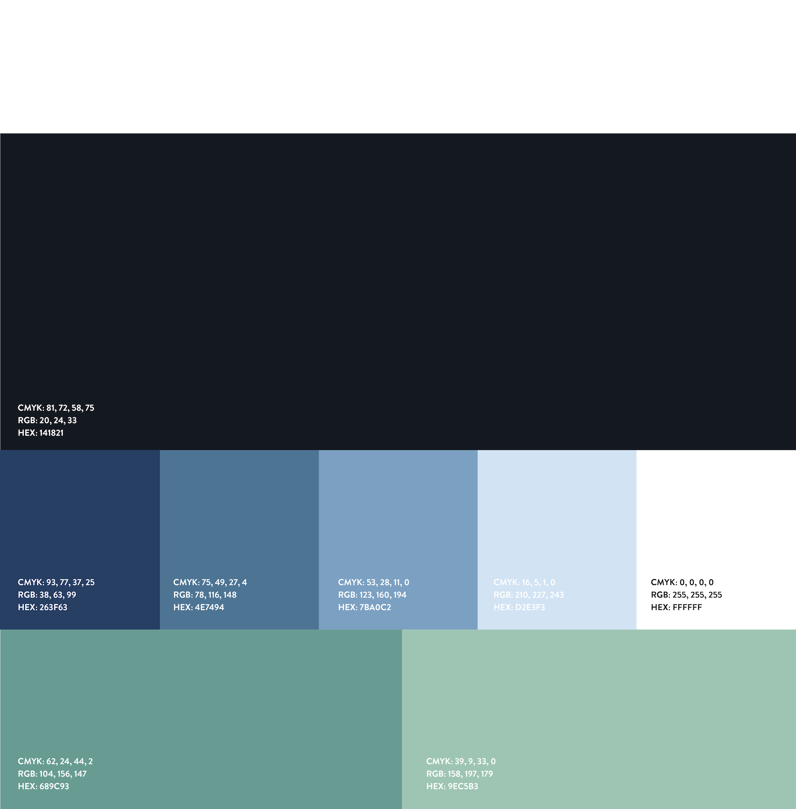
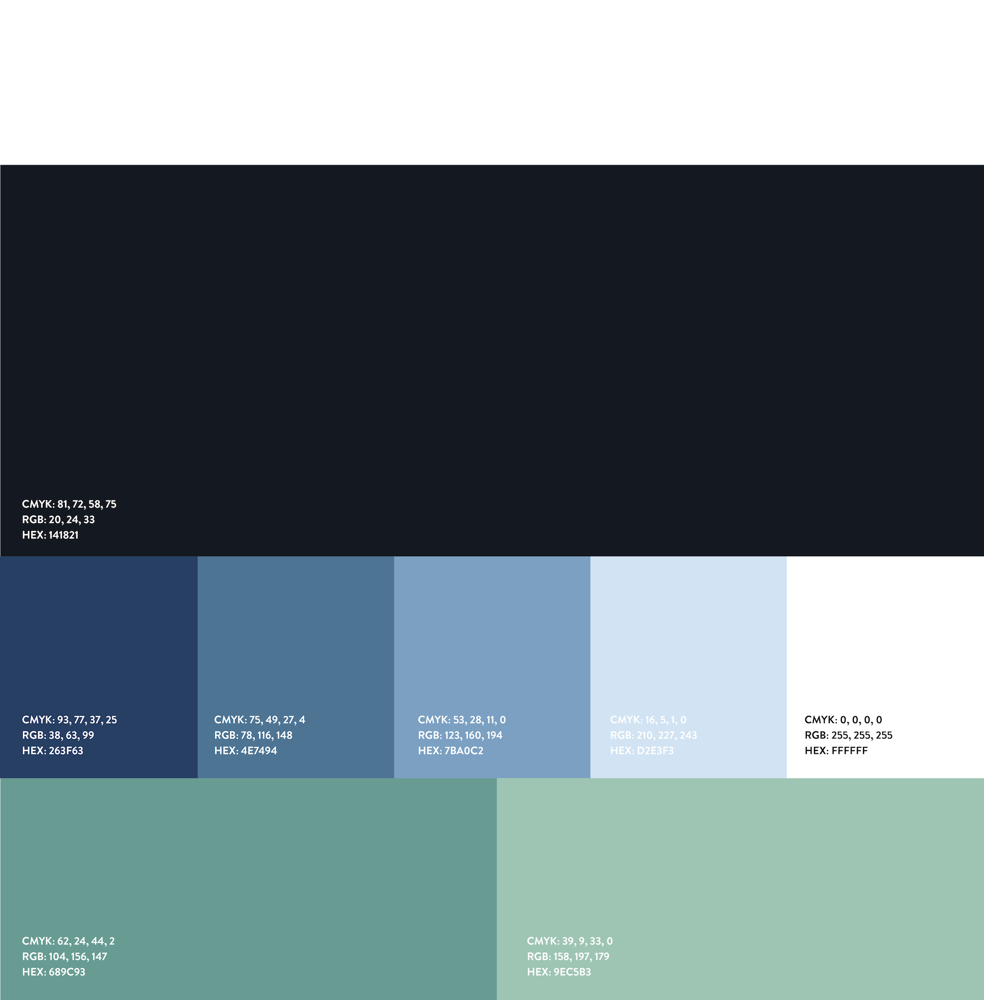

The entrepreneurship class led by Greg Gottesman of Madrona Venture Group was an exceptional learning experience for me as it provides me a chance to collaborate with Computer Science and MBA Business students to start a new company from the ground up — something that I couldn't get out of regular design classes alone. Throughout the quarter, each team member takes turns to pitch our product Auctora to different guests every week, who comprised of CEOs, venture capitalists, lawyers, and journalists. At the end of the class, we presented a working demo of Auctora with the business plan to venture capitalists at the Madrona office.
Today we live in a technology-driven society, yet college recruiting is still stuck in the Stone Age. Recruiters experience serious pain points on a daily basis. Auctora is the solution we delivered after we found out that there is a large opportunity and, in fact, need, for optimization. Our team entered the "Sweet Sixteen" round of the 2015 Business Plan Competition, competing for the $25,000 Grand Prize with other 37 student-led startup teams.
Throughout the quarter, I learned a lot in communicating my ideas to non-designers, bridging the expectation gap of work timeline, taking the lead on designing a product and establishing basic understanding of entrepreneurship. At the end of the day, being compassionate of other team members and showing respect to others' expertise are some of the crucial attributes of a successful startup team, and having good communication is a good first step to start with.
 
